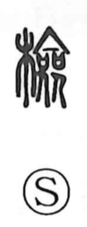

検

Uncategorized
Kun: shiraberu, aratameru | On: ken
examine ・ investigate ・ inspect ・ check
Explanation
Originally written 檢, this is a phono-semantic character with the wood element giving a concrete, handling-related setting, and 僉 providing both sound and core imagery. 僉 shows two figures dancing side by side as they present ritual covenant vessels (sai), containers for written petitions offered to the gods. From that ritual scene arise senses of austerity and simplicity, and also of trial—testing and confirming the gods’ will. The same phonetic appears in 儉 (倹, frugal) and 驗 (験, to try/test), all read ken. Against this background, 検 came to mean to examine and reflect, and by extension to record or mark the results of an investigation.